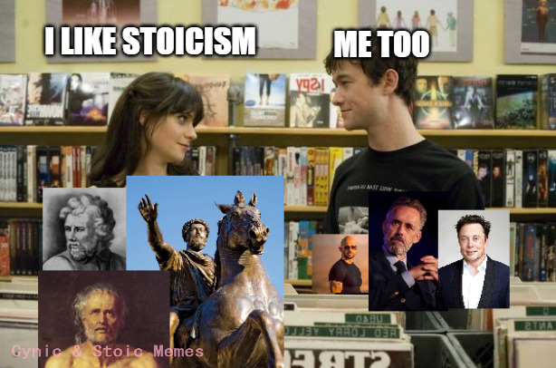
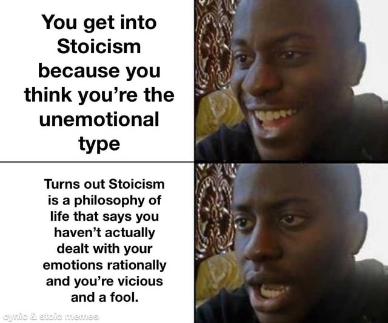
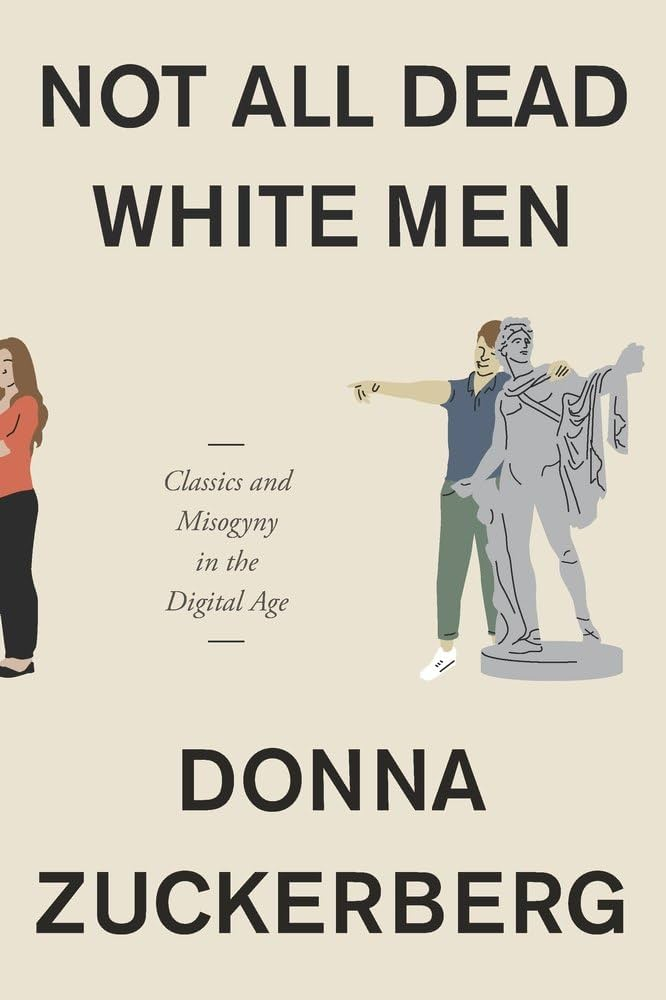
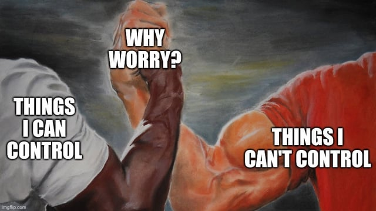
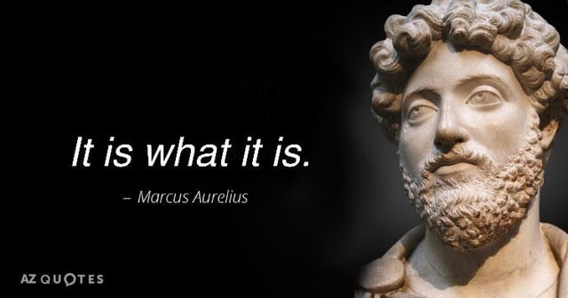

What would a Stoic do in the digital age?
You just met a self-declared ‘man of culture’, who is interested in philosophy and recommends himself as an open-minded person. What a lucky day! You strike up a conversation, but the longer it goes, the more red flags appear. You see, he reads Marcus Aurelius daily but is also a fan of Jordan Peterson. He talks about the rising cost of living, but since that’s out of his control, he tries to hustle like Andrew Tate. Oddly, gender equality in the EU bothers him a lot for something outside of his control, so he exults the local Putin or Trump cosplayer. Similarly, he does not have a girlfriend but talks about women as ‘females’, and his role model is Elon Musk.
Just what in the world is happening here?

Meme posted by u/zenoofwhit on r/StoicMemes community.
In 2018, when Donna Zuckerberg published a book about ancient authors and misogyny in the digital age, the issue was still digital. Seven years later, when you encounter someone in real life holding a copy of Marcus Aurelius' Meditations in their hand, you are well to brace yourself. They might just be interested in ancient philosophy or the very valid self-help and self-control aspects of Stoicism. But just like in the example above (and it is real), they might understand and use Stoicism differently:
-
Life hack Stoicism: this ranges from the mostly benign self-help industry (see Ryan Holiday) to the swarm or heavily AI-edited scams on social media. Both approaches can overshadow the ethical side of Stoicism. Sometimes called $toicism.
-
Corporate Stoicism: yet another tool to increase productivity without actually addressing the real needs - like increasing salaries, reducing work time and addressing bullshit jobs. Alternatively, employees can use it to gaslight themselves into accepting harsh working conditions (see lists such as 6 Stoic Lessons to Make Your Corporate Job Less Miserable).
-
Billionaire Stoicism: a way to whitewash and promote oligarchs such as Elon Musk, Jeff Bezos, Jack Dorsey or Bill Gates, who have been repeatedly called ‘Stoics’ (see more on the topic here and here).
-
Alpha-male Stoicism: an intellectual mask for sexists who try to bring back ancient sexual politics, in which women were under the total control of men. You could read an excellent book on that topic, but a tweet by Andrew Tate exemplifies the problem quite well: here is a man prosecuted for sexual abuse, a man known for deceiving women into sex work, who claims to teach Stoicism and self-accountability.
-
Bro-icism: related to the previous, it promotes the idea that real men work hard and endure without the display of emotions. This is a simplified and backward interpretation of the ancient philosophy, and it is no wonder that so many of the men who fall for it end up feeling worse.
The list is not exhaustive. Like with any other popular cultural movement, it is expected to see scammers and fraudsters trying to profit from it. But there is another element to this: politics.
The worst manifestations of these trends are part of the broader anti-intellectualism movement that has accompanied the growth of nationalist, violent and hateful politics in Europe and the US. (This way of doing politics is better known under the umbrella terms of far-right or techno-fascism.) But isn’t it a contradiction to talk about anti-intellectualism when Stoicism is about books and philosophy? No – if the grifters that usually profit from this cared for consistency, they’d not take advantage of voters or online followers in the first place.
Meme found on this page from ‘The Philosopher’s Shirt’ website.
Let me explain that properly. Stoicism is being co-opted as one of the far-right aesthetics, together with other parts of the Greco-Roman heritage and history. The point is not to encourage critical thinking or an in-depth examination of philosophy but to look as an intellectual. The (usually) unspoken part about that aesthetic? It is a space where (rich) men hold all the power and make all decisions! In this article, we will look more in-depth at why Stoicism specifically is used for such ends and what can be done about it.
Why Stoicism?
Stoicism was one of the major philosophical schools in the ancient Greco-Roman tradition and has recently seen a rise in popular interest. It promoted ideas such as pantheism, a specific view of physics, the cultivation of knowledge and a moral path based on virtues such as prudence, justice, courage, moderation. It also encouraged a rather simple, frugal lifestyle, emotional tranquillity and directing one’s energies towards things that can be influenced instead of those one has no control over.
These therapeutic, ethical and self-control ideas are the most important reason for the interest in this ancient philosophy, but a growing number of people are exposed to a superficial, surface-level Stoicism (such as the life-hack or bro-icism versions mentioned earlier). They are also constantly ‘consuming’ hateful political content related to white supremacy and male dominance. This translates into support for violent politicians, even though a proper reading of Stoicism would rather direct one towards rational politics instead of being driven by hate or a desire for violence.

Meme posted by u/zenoofwhit on r/StoicMemes community.
It is instructive to look at the role of ‘Stoicism’ in this: to make one accept systemic issues instead of fighting them, even when those exact issues cause a lot of harm. This results in a strange conformism and hides one of the central ideas of Stoic philosophy: a love for knowledge as the means to literally be happy and virtuous. But if there is anything the modern ‘Stoics’ are sure to do, it is to oppose any kind of knowledge that may actually make them nicer people.
Another illustration of this superficial understanding of philosophy is the reception of Epictetus by certain masculine communities, both online and offline (Red Pill, far-right). Epictetus was famously a slave, but for many of today’s ‘men of culture’, this fact is not the start of a discussion on systemic abuse. ‘Instead’, as Donna Zuckerberg writes, ‘the lesson these men take from Epictetus is that slavery is not detrimental to philosophical greatness. The responsibility for self-improvement is shifted onto the slaves themselves, absolving slave owners (and those who have benefited from the legacy of slavery) from the need to make amends.’
A recent example comes from business, fitness and Stoic influencer Alex Hormozi, who went viral with the lesson he learnt from slavery. In his words, ‘slaves worked all the hours they were awake for their entire lives. […] I think, like, if they can do it, so can I.’ This… unusual approach gathered millions of views on social media and many copycat videos extolling the benefits of slavery. It is, of course, not the fault of Seneca or Zeno that Stoicism is increasingly associated with such a toxic mindset, or that such influencers do not understand (or care about) the challenges people are facing in real life.
While it is true that ancient ‘Stoicism was a philosophy for a time of slaves and when women were chattel, of fixed hierarchies’, we live in different times with different challenges. It is unfortunate, but many nowadays use it as a way to accept their chains instead of seeing beyond them. Not to mention that current and wannabe oligarchs ‘love a philosophy that doesn’t require them to give up on their wealth, but accept their role in the world, and counsels the less fortunate to not worry so much about their circumstances and accept their lot.’ (Source)

Cover of Donna Zuckerberg’s excellent book on how Stoicism and related classical studies are co-opted for violent ends in the online space. See my review of the book here.
Your ad-blocker ate the form? Just click here to subscribe!
Beyond the status quo
Markus Uehleke uses the term Vulgar Stoicism to denote the version that flatters one’s ego but ultimately ends up reinforcing the status quo. That is, it ‘excuses the impotent ego in a world where we can consciously watch misery’ and also feel like we are powerless about it. One can thus remove oneself from the miserable realities and tricky moral or political questions all the while maintaining an intellectual veneer.
But the strong emphasis on knowledge central to Stoicism is rather opposed to an uncritical stance towards the status quo or caring about social matters only for personal benefit. Let us look at a topic that’s usually not considered a political issue: vegetarianism.
This is not something the ancient Stoics wrote much about, but it is an increasingly pressing moral issue of our times. So, what is a modern enjoyer of said lifestyle to do? Massimo Pigliucci quotes Epictetus, ‘What decides whether a sum of money is good? The money is not going to tell you; it must be the faculty that makes use of such impressions — reason.' He then continues*, ‘*Substitute “diet” for “money” and you can answer in the same way: reason. And reason — given contemporary scientific knowledge — very much tells us that we, as Stoics, ought to be vegetarians.’ (Source)
A ‘vulgar’ understanding of Stoicism can make one apathetic to issues others are facing, not only in the case of animals but also humans (racism, exploitation, sexism). However, the benefits that Stoic practice can bring to the individual (calmness, peace of mind, resilience) will be very much of use in communal life too. For, after all, we do not face the same predicaments as people living 2000 years ago, when many indeed could not control much more than their own emotions. We, especially in democratic and comparatively affluent countries, still have power in our votes and as part of groups. We can still organise in order to pursue meaningful change.

Meme posted by u/ Ikafrit on r/StoicMemes community.
Does Stoicism generally lead to apathy or place too much pressure on the individual, or just the vulgar versions? Such questions have been around for more than 2000 years, but this should be no reason for despair. Indeed, a good start is to simply read more philosophy, beyond surface-level internet inspirational quotes. Another good practice is to actually cultivate that love for knowledge that ancient Stoics talked so much about, even at the risk that it may challenge the abstract, dry sense of control the vulgar, life-hack version of this philosophy may bring.
Final notes
In the US and Europe, Stoicism is one of the most popular philosophies around. As of 2025, on the first page of popular philosophy books on Amazon, you will find 5 versions of Marcus Aurelius’ Meditations out of 16 books in total. But more than that, Stoicism is a mega-industry that promises control over emotions and, in the scammier iterations, a chance to join the wealthy elite. This is a tragedy for a philosophy that has genuinely helped so many become better people, for themselves and others.
One can find in today’s Stoicism a force for good but also a means to promote the interests of oligarchs and hateful ideologues. That’s because it is important who reads the books, not only what is written in them. ‘The ancient Greeks said that philosophical arguments are like medicines: Some would be appropriate for some people at certain times, others for other times. Stoicism is a useful medicine, and there may be times in our lives when swallowing it is better than others.’ (Source)
A great deal of responsibility lies on the shoulders of classicists. ‘It will require heroic effort for the leaders of the neo-Stoic movement to ensure that, by embracing Stoicism, they are not perpetuating systemic oppression along the axes of gender, race, and class.’ Donna Zuckerberg further argues this means ‘more than simply pointing out that not all dead white men were openly misogynistic and that prominent Stoics advocated for gender equality and female education and against the sexual exploitation of women and slaves. It will require continued interrogation of how Stoicism helps both the oppressed (by helping people cope with their situation and make the best of it) and the oppressors (by drawing attention away from systemic injustice).’
Fortunately, this effort bears fruit in the work of authors quoted here that fight against the appropriation of this philosophy by violent groups and shows that one can be a Stoic without having to give up the moral progress we achieved in the last 2000 years.

Meme posted by u/I_am_Batsam on r/StoicMemes community.
Sources and further reading
Durand, Marion, Simon Shogry, and Dirk Baltzly, Stoicism, The Stanford Encyclopedia of Philosophy (Spring 2023 Edition), Edward N. Zalta & Uri Nodelman (eds.). Link here.
Goldhill, Olivia. Silicon Valley Tech Workers Are Using an Ancient Philosophy Designed for Greek Slaves as a Life Hack. Quartz, 21 July 2022. Link here.
Pigliucci, Massimo. Should a Modern Stoic be Vegetarian?. Modern Stoicism, 14 July 2018. Link here.
Shayla Love. The Revival of Stoicism. VICE, 27 July 2024. Link here.
Sherman, Nancy. If You’re Reading Stoicism for Life Hacks, You’re Missing the Point. The New York Times, May 14, 2021. Can also be read on the web.archive.org website – link here.
Zuckerberg, Donna. Not All Dead White Men: Classics and Misogyny in the Digital Age. Harvard University Press, 2018. Author’s website.
◊ ◊ ◊

Petrică Nițoaia is a former shepherd, passionate about philosophy and animal ethics. He writes mainly on the ethics of food production, wild animal suffering, human rights and philosophical pessimism. He finds philosophy and history not only fascinating but also fun and useful for making the world a more joyful and fair place for all.
Petrică Nițoaia on Daily Philosophy: